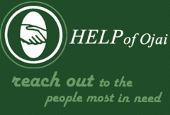

HELP of Ojai

Website:
http://www.helpofojai.org/ Location:
Ojai, CA
Through a combination of individual, community and public resources, we seek to help those seniors, families and youth most in need in our community. Our primary objective is to provide need-based services and programs. Secondly, HELP seeks to partner with other groups and agencies to facilitate the necessary programming and community infrastructure to address emerging needing in an integrated, proactive manner.
HELP’s programs have made us an indispensible part of the community over the 42 years we have been in Ojai. From providing direct services to seniors, families and youth, to serving as a senior gathering place, to partnering with other agencies in the Valley, HELP is consistently working to enhance the well-being of the residents of the Ojai Valley.
OUR SERVICES
Daily Congregate meals
Home Delivered Meals
Frequent Food donations open access
Respite Care
Adult Day Care
Senior Activities
Utility Payment center
Facilities usage for meetings and events
Transportation to appointments and shopping
Volunteer opportunities
Food pantry
Rental assistance
Student Bereavement
Utility Assistance
Senior Yoga
Supported Projects
Community Development Project, Technology Coordinator
James (Jim) Mora
6/2007 — 6/2008
HELP was recently given control of a 42-acre site (11 acres agricultural land, 80,000 sq.ft of buildings in varying states of usability and open space) of a former Honor Farm/jail complex in order to meet the growing needs of our aging community.
VISTA members will work with HELP staff and community members to transform the jail into a community resource center. The project is large and includes development of broadband access for the full 42 acre site, technical assistance for the organization as a whole, development of expanded programming for our CTC, expansion of our digital storytelling project and website development to improve accessibility for those who are vision impaired.
Community Networking: with staff, finalize negotiations to provide broadband access at the former jail site. Develop outreach materials to promote broadband services. Work on e-newsletter and other materials to encourage resource use.
Technology Assistance: With IT Director, assess current staff technology capabilities and identify and provide training resources in use of basic computing tools, including Microsoft Office, email, security and backup procedures. Assist in equipment/software selection as lab is upgraded
Digital Media: coordinate Digital Storytelling program that matches seniors and teens while collecting life stories. Document transformation of “jail to jewel”. Recruit and train volunteer instructors as well as program participants
Access and Inclusion: Work with webmaster to streamline website and improve accessibility for those with disabilities. Manage open access hours at computer lab.
Vista volunteer developed our agency’s website, set up, maintained and assisted in our computer lab (open to the public at no charge to give low-income seniors and others internet access), and developed curriculums for computer classes. Also, assisted in agencywide IT issues, offering advice and providing consultation.Website was created, computer lab was opened, class curriculum was developed and classes offered.
The website that Jim developed was the first one our agency has ever had. It has resulted in more public exposure and donations.
CTC Accessbility Improvement
John Mirk
9/2003 — 9/2004
During the six month period of February 2004 – August 2004, John Mirk worked to improve accessibility of HELP of Ojai’s HELPNet CTC. Training of staff and volunteers continued. Open access hours were expanded. Lab accessibility and program opportunities were documented and communicated to Ojai Valley residents through the HELP of Ojai newsletter, reaching 2,000+ households monthly.
Goal 1: Increase accessibility of 6 station computer lab by updating hardware and software and programming that utilizes and encourages lab involvement.
Goal 2: Train 10 staff members and 5 volunteers in use of computer lab resources
Goal 3: Document and communicate program activities. (Develop speakers bureau & make minimum of 6 group presentations)
Goal 4: Public and private sector resources will enable the project to continue after the Members leave.
The lab was expanded during the second six month period in order to better serve the local homeless community. The second site minimized conflict between seniors and homeless computer users.
Goal 1:
6 old computers (Win 95 OS) were replaced with 6 Win XP OS computers. Curb cuts were added to improve site accessibility. A variety of input devices were installed to enable alternative input to standard mouse and keyboard. Two 2-hour classes on basic computing were offered in Spanish, reaching twelve adults. A variety of user profiles were installed on the computers (low vision, Spanish, etc). Currently assisting senior with limited vision to determine appropriate computer technology.
Goal 2:
Two senior volunteers were trained as docents for open access hours. Training on computer lab resources and basic computing skills were provided to 10 staff members. Training will continue in an ongoing basis
Goal 3:
One class of young@heart was held and two classes on basic computing in Spanish, in addition to the ongoing computer classes held in the lab. Open Access hours were implemented; the lab is now available for general use 5 days a week.
Goal 4:
Three year funding for the computer lab was secured from the Ventura County Area Agency on Aging.
Additional funding was obtained through the CTCNet C4T program to expand computer lab services to the local homeless community
OTHER ACCOMPLISHMENTS
• Updated technology assessment plan
• Improved physical accessibility of lab by installing curb cut in front of HELPnet door
• Installed and networked 6 computers in HELPnet lab
• Assisted in installation of WAN linking HELP of Ojai’s three work sites- the Little House Multipurpose Center, Oak Tree House Adult Day Support Center and Community Assistance Program office.
• Implemented open access hours for computer lab
• Developed and maintained program database
• Recruited and trained two volunteers to help monitor open access hours
• Evaluated and implemented assistive technology such as alternative keyboards
• Implemented beginning computing classes for Spanish speaking clients
• Revised organizational website (ongoing project)
• Designed, built and installed new computer table for lab
• Increased awareness of accessibility resources by visiting the Computer Access Center in Los Angeles, the Ventura College CTC and the CSUN International Conference on Technology and Persons with Disabilities
• Created a personal webpage: http://www.helpofojai.org/helpNet/vista.html
Related Content
None created yet!